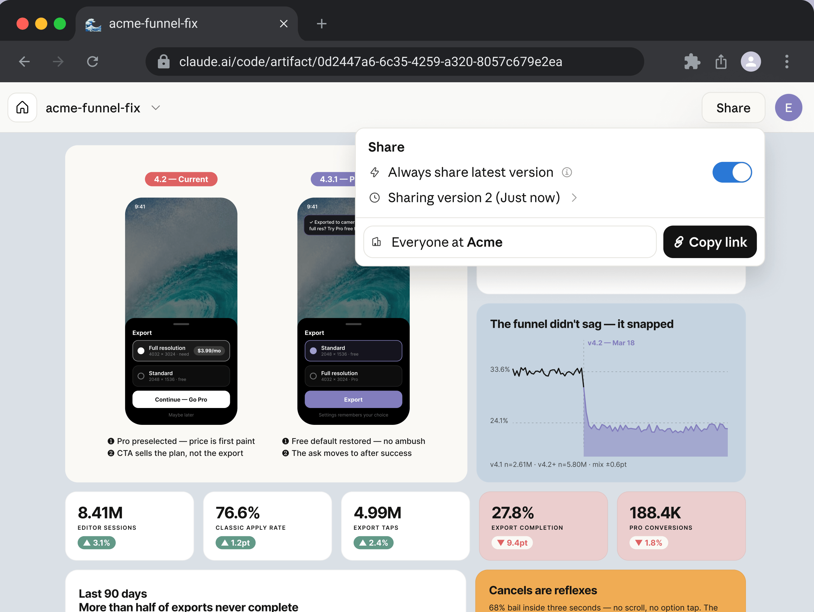

将会话输出作为 artifacts 共享
Artifacts 将 Claude Code 的工作转化为 claude.ai 上的实时交互式页面，您可以将其保持私密、与您的组织共享或发布到公开链接。
Artifact 是一个实时交互式网页，Claude Code 从您的会话发布到 claude.ai 上的私密 URL。您在浏览器中打开它，随着会话的继续，它会实时更新。当您希望其他人也看到它时，可以从页面标题中共享它。

何时使用 artifact
当终端文本不是 Claude 生成内容的合适媒介时，请使用 artifact：输出内容更容易查看和交互，而不是逐行阅读。Claude 从您的会话可以访问的任何内容构建页面，包括您的代码库和通过您的连接工具拉取的数据，因此页面可以显示需要段落才能描述的内容。例如，要求 Claude：
- 通过带注释的 diff 向审查者讲解拉取请求
- 从会话已拉取的数据呈现仪表板
- 并排展示多个设计或实现选项
- 保持在长任务运行时填充的调查时间线
- 向团队成员发送链接，而不是将输出粘贴到 Slack
- 发布状态板，每次有人打开时通过 MCP 连接器拉取新数据
有关与这些相匹配的提示，请参阅您可以构建的内容，有关连接器支持的板的提示，请参阅使用 MCP 连接器拉取实时数据。
artifact 不是什么
artifact 是工作的捕获：一个自包含的页面，没有后端，因此无法提供多个路由。对于具有后端的托管内部工具，请改为在您自己的基础设施上部署它。有关完整的限制集，请参阅页面约束。
创建工件
Claude 可能会在输出适合作为页面时自动发布工件，或者你可以直接请求创建一个。要请求创建，请用简洁的语言命名该功能或描述你想要的视觉输出。任何比以文本形式阅读更容易看到的内容都是很好的候选，例如带有内联注释的 diff、图表或一组选项的比较。下面的提示是两个示例；有关更多模式，请参阅你可以构建的内容。
Make an artifact that walks through this PR with the diff annotated inline.
Build a dashboard artifact of last week's deploy failures by service and keep it updated as you investigate.
除非您指定位置，否则 Claude 会将页面写入项目外临时目录中的 HTML 或 Markdown 文件，然后发布它。在您共享它之前，Artifact 仅对您可见。
首次发布后，Claude 会打印 URL，您的浏览器会打开新页面。
- 重新打开页面：随时按
Ctrl+]可重新打开会话中最近的 Artifact - 查看本会话的 Artifact：输入框下方的
⧉标签会显示 Artifact 的名称，当会话中有多个 Artifact 时则显示数量。在全屏渲染中，点击它可打开/artifacts列表 - 阻止浏览器自动打开：在您的环境中设置
CLAUDE_CODE_ARTIFACT_AUTO_OPEN=0 - Remote Control：如果您通过 Remote Control 从 claude.ai、Claude Desktop 或 Claude 移动应用发送提示词，运行会话的机器上不会打开标签页。下次 Claude 根据您在终端中输入的提示词发布该 Artifact 时，浏览器会在那台机器上打开
Claude 会为 Artifact 选择标题，以及与页面内容相匹配的浏览器标签页图标，例如图表或日历。标题会显示在您在 claude.ai 上的 Artifact 库和共享链接中。如果您想要特定的标题或标签页图标，请告诉 Claude。
如果 Claude 回复说无法发布，或者写入了本地 HTML 文件但没有提供链接，则说明您的会话未启用 Artifact。请检查可用性要求。如果终端显示 Artifacts need a claude.ai login，请参阅该错误的条目了解如何登录。
Claude Code 何时会在发布前询问
Claude 根据您输入的提示词发布的新 Artifact 会直接通过，无需权限提示或分类器审查。在以下情况下，Claude Code 会先询问您，或在自动模式下让分类器审查该发布：
| 情况 | Claude Code 的行为 |
|---|---|
| 会话处于计划模式 | 在每个 Artifact 首次发布前询问 |
| 该发布声明了页面的运行时功能，例如连接器调用或文件下载 | 在该次发布前询问 |
| 您已公开共享该 Artifact | 每个对话中在更改它之前询问一次 |
| Claude 在由您会话中触发的会话级定时任务（而非您输入的提示词）启动的轮次中发布 | 在每个 Artifact 首次发布前询问 |
| Claude 未经您批准无法读取该文件 | 在发布前询问。针对 Artifact 工具的允许规则不会跳过此提示 |
在 Manual 或 acceptEdits 模式下，Claude 对某个未经您批准无法编辑的 Artifact 文件进行小幅更改，例如 Manual 模式下的项目文件 |
在发布该更改前询问。即使有允许规则涵盖 Artifact 工具，也会询问您，因为对该文件的编辑需要您的批准 |
要让 Claude 无需您批准即可读取工作目录之外的文件，请在启动时使用 --add-dir 或在会话期间使用 /add-dir 将其所在文件夹添加为工作目录。Claude 本就可以无需询问即读取这些目录中的文件，以及它写入页面所用的临时目录中的文件。
如果发布提示中包含诸如 Also makes 1 edit to that file on disk. 的句子，说明 Claude 正在一步完成对 Artifact 文件的更改和发布。当您批准该提示后，Claude Code 会先发布页面，然后将更改写入您的文件。
更新一个 artifact
要求 Claude 修改页面，或让长时间运行的任务在进行过程中重新发布。Claude 编辑底层文件并重新发布到相同的 URL。
在摘要图表下方添加按地区的细分，然后重新发布。
任何打开该页面的人都会看到就地更新。每次发布都会成为一个版本，从页面标题中的 Share 控件，你可以选择查看者看到哪个版本。
要从不同的会话更新 artifact，请给 Claude 其 URL，或使用 /artifacts 附加它。如果两者都没有，新会话会创建新的 artifact 而不是更新现有的。
使用今天的数字更新 https://claude.ai/code/artifact/5fbea6f3-...
再次查找一个artifact
在Claude Code中运行/artifacts，以列出您拥有的Artifact以及与您共享的Artifact。当前会话的Artifact排在最前面，位于This session下。
选择一个Artifact，然后按以下任一按键：
Enter：如果它已附加到当前会话，则在浏览器中打开它；如果尚未附加，则将其附加到当前会话o：在浏览器中打开它c：复制其链接d：在云端会话之外，经您确认后永久删除您拥有的Artifact。其链接将对所有人失效，包括您自己
Claude Code从您的claude.ai账户读取列表，因此当Artifact的链接已从终端滚出时，/artifacts在新会话中以及在/clear之后都能使用。
分享一个artifact
新创建的artifact只有你能看到。要分享它，请在浏览器中打开该artifact，并使用页面标题中的分享控件。标题还链接到你的库，位置在claude.ai/code/artifacts，其中列出了你创建的每个artifact。
您组织中的查看者可以看到谁发布了该页面：在组织内共享的Artifact上，您的名字在标题菜单中；在公开Artifact上，对于组织内已登录的查看者，您的名字在页面标题中。打开公开链接但未登录的查看者，或来自组织外的查看者，会看到标签Content is user-generated and unverified.而不是您的名字。
你可以与谁分享取决于你的计划：
- 在你的组织内：在Team和Enterprise计划上，向组织中的特定人员或所有人授予访问权限。查看者以组织成员身份登录claude.ai以查看该页面。
- 公开：分享一个链接，互联网上的任何人都可以打开，无需claude.ai登录。在Team和Enterprise计划上，公开分享处于关闭状态，直到所有者为组织启用它。
链接到特定视图
如果一个页面有多个视图，例如标签页或章节，您可以直接链接到其中某一个。请让Claude提供这些链接：
Give me a link to each tab of the deploy failures dashboard.
每个链接都是该Artifact的链接末尾加上一个锚点，例如#overview。
让某人与你一起编辑
与你分享的人默认是查看者：他们可以看到你发布的每个版本，但无法更改页面。在Team和Enterprise计划上，你也可以让某人成为编辑者。在分享对话框中，添加一个人并将其角色从查看者切换到编辑者。
编辑者发布新版本的方式与你从另一个会话更新artifact的方式相同：他们向Claude提供artifact的URL，或从/artifacts附加它，Claude会拉取当前内容并用他们的更改重新发布。打开该页面的每个人都会实时看到每个更新。
如果编辑者发布时Claude持有的是该页面的旧副本，Claude Code会拒绝基于该副本的发布。随后Claude会将其更改合并到较新的版本上并再次发布。
阅读与你共享的工件
当有人与你共享一个工件时，你可以让 Claude 阅读它：给 Claude 提供其 URL，或从 /artifacts 附加它。
Claude 读取他人编写的页面的方式与它读取网页的方式相同，使用 WebFetch：它获得关于所询问内容的摘要，而不是原始页面，摘要报告写入页面的说明，而不是转达它们。Claude Code 还将页面的完整源代码保存到本地文件，当 Claude 需要确切内容时可以打开该文件，例如将工件重新发布为 编辑器。
在以下情况下，除了您的权限模式或规则所要求的任何提示之外，Claude Code 还会在 Claude 读取 Artifact 之前请求您的批准：
- 没有网络访问权限的云端会话：对于云环境，即 None 级别。在自动模式下，可以改由分类器进行批准；在 Cowork 会话中，只能由您本人批准。
- 其他组织的公开 Artifact：即使在自动模式下，Claude Code 也会先询问您。在 Claude Code 无法询问您的情况下（例如在
bypassPermissions模式下），Claude 无法读取该 Artifact。只有在功能标志获取开启时，Claude 才能读取这些 Artifact。 - 无法确认所有者或网络设置：当 Claude Code 无法确认 Artifact 的创建者，或无法确认云端会话的网络设置时，它会进行询问，且您的批准仅适用于该次请求。
- 计划模式：在计划模式下，Claude Code 会在 Artifact 工具读取您组织中其他人创建的 Artifact 之前进行询问。
当 Claude 使用 WebFetch 读取 Artifact 时，WebFetch 自身的提示规则仍然适用。
收集工件上的评论
当您在组织内共享工件时，与您共享的人可以在页面上留下评论，您可以让 Claude 读取这些评论并回复。您需要 Claude Code v2.1.221 或更高版本。Claude 在两种情况下读取评论：
- 您要求 Claude 读取评论：向 Claude 提供工件的 URL 并要求查看评论。Claude 列出每个线程，并标记可以编辑工件的人发送给它的评论。
- 可以编辑工件的人向 Claude 发送评论：在页面上的线程中，他们使用发送给 Claude发送评论，或在其中提及
@claude。无论哪种方式，他们都会激活该线程。
Claude 只能回复或解决已激活的线程。其他线程保持打开状态，直到某人在页面上解决它们。查看者会看到每条回复都归属于 Claude，通过您。
如果您公开共享工件，只有其公开链接访问权限的人看不到其评论，也无法添加任何评论。现有评论线程保留在工件上，您和其编辑者仍然可以读取和回复它们。
要自己要求查看评论，请向 Claude 提供 URL：
读取 https://claude.ai/code/artifact/5fbea6f3-... 上的评论，并进行评论者要求的更改。
如果 Claude 告诉您它无法读取评论，请确认您的版本、您的会话和您的功能标志设置：
- 您运行的是 Claude Code v2.1.221 或更高版本。
- 您不在安装 Claude Code 或从 v2.1.221 之前的版本升级后的第一个会话中。在安装或升级后的第一个会话中，Claude 可能还无法读取评论；启动新会话并再次询问。
- 您没有关闭功能标志获取。
让 Claude 自动回复评论
在您的会话发布 Artifact 后，Claude Code 会监视该 Artifact 的评论。当可以编辑 Artifact 的人向 Claude 发送评论时，它会立即到达您的会话，Claude 可以读取线程并回复，而无需您询问。
您需要 Claude Code v2.1.228 或更高版本。如果您关闭了功能标志获取，Claude Code 不会监视评论。
您的权限模式决定了当发送的评论到达时 Claude 的行为：
- Claude 自动回复：如果您所处的权限模式允许 Claude 在不询问您的情况下发布回复，Claude 会读取线程并回复。您会看到
Auto-replied to comment thread on Artifact: <name>。 - Claude 等待您：在计划模式之外，当发布回复需要您的批准时，您会看到
Comments are waiting on Artifact: <name>。Claude 然后要求您批准读取线程，再次批准发布回复。 - Claude 在计划模式中暂停：您会看到
Comments are waiting on Artifact: <name>，Claude 不会回复，直到您离开计划模式并要求它读取和回复。
如果 Claude 在一小时内处理了某个 Artifact 上的 60 条已发送评论或线程激活，它也会停止自动回复该 Artifact。您会看到一次 Comments are waiting on Artifact: <name>，当该小时内的评论过期后，Claude 会重新开始。
运行 /tasks 查看您的会话正在监视的 Artifact。/tasks 会将 Claude Code 自行启动的监视归入 System tasks 行下。在该行上按 Enter 即可列出它们。您要求 Claude 启动的监视显示在 Monitors 下。
您可以通过以下任何方式停止 Claude 自动回复：
- 在空闲提示符处按一次 Ctrl+C：Claude 暂停回复您的会话正在监视的每个工件。在您发送下一条消息后，回复会重新开始。
- 在
/tasks中停止任务：Claude 停止回复该工件，直到您要求它在那里恢复回复。重新发布工件不会再次启动回复，当您稍后恢复会话时，停止仍然适用。 - 在 3 秒内按两次
Ctrl+X Ctrl+K：停止每个运行的后台子代理的和弦也会停止 Claude 为会话的其余部分回复每个工件。要求 Claude 恢复回复不会撤销此停止。
由 Claude Code 自行启动的监视可能会在 Artifact 数小时无活动后结束。要重新启动监视，请再次发布该 Artifact 或要求 Claude 监视它。
如果传递评论的服务变得不可用或停止响应，Claude Code 会尝试重新连接一段时间，然后停止监视您的会话正在监视的每个工件。
使用 MCP 连接器拉取实时数据
Artifact 可以在每次有人查看它时调用 MCP 连接器，因此页面显示的是当前数据，而不是构建它的会话中的快照。来自 Artifact 的连接器调用在 Pro、Max、Ultra、Team 和 Enterprise 计划上可用，需要 Claude Code v2.1.209 或更高版本。在早期版本上，Claude 会发布该页面，其中包含会话在构建时收集的任何数据。
要创建一个由连接器支持的页面，请在提示中命名连接器和您想要的数据：
构建一个我们未关闭的 Pull Request 的 dashboard Artifact，当页面加载时通过我的 GitHub 连接器拉取实时列表。
Claude 声明该页面可能调用哪些连接器作为发布的一部分，该页面无法调用该声明之外的连接器。只有来自您 claude.ai 账户的连接器符合条件：Claude 在声明中命名它们，当有人查看页面时，每个调用都会通过查看账户自己的连接运行到该连接器。您在 Claude Code 中配置的本地 MCP 服务器（例如来自 .mcp.json 的服务器）可以在 Claude 构建页面时提供数据，但已发布的页面无法调用它们。
页面在加载时获取数据，可以按间隔刷新或当查看者在页面上使用刷新控件时刷新。响应缓存在查看者的浏览器中，因此重新打开的页面会立即从缓存的响应呈现，然后使用新结果更新。
连接器调用如何为查看者工作
当已发布的页面调用连接器时，该调用使用查看页面的人的账户，而不是发布它的人的账户：
- 每个查看者使用他们自己的连接器：调用通过查看账户的已连接工具进行，因此两个打开同一 dashboard 的人可能会看到不同的数据，具体取决于他们的账户可以访问什么。该页面永远看不到任何人的凭证；claude.ai 代表页面进行调用。
- 查看者首先批准访问：claude.ai 在页面的第一个连接器调用之前向每个查看者请求权限。拒绝的查看者或未连接页面使用的连接器的查看者仍然可以看到页面，但没有其实时部分。
- 操作也使用查看者的账户：页面可以提供控件，调用具有副作用的连接器工具，例如发布消息或更新问题。该操作通过选择控件的任何人的账户进行。
当您计划共享一个由连接器支持的页面时，请要求 Claude 在每个实时部分中包含一条后备消息，该消息命名它需要的连接器。缺少连接的查看者随后会看到要连接的内容，而不是空部分。
您可以在您的组织内或公开共享一个由连接器支持的页面，如您的计划和组织设置所允许的那样。连接器调用不会为未登录 claude.ai 的查看者或来自您组织外部的查看者运行。该查看者看到的页面没有其实时部分。
页面对查看者显示没有实时数据
当由连接器支持的页面呈现但其实时部分对您组织中的查看者保持为空时，请解决这些原因：
- 查看者未连接连接器：连接器是按账户的，因此每个查看者都需要自己连接到页面调用的每个连接器。他们可以在 claude.ai 上的 Customize > Connectors 下添加一个，然后重新加载页面。
- 查看者拒绝了权限请求：拒绝在该页面加载的其余部分持续。重新加载页面会再次显示权限请求。
- 为组织关闭了连接器调用：所有者控制管理设置中的启用 artifact 连接器切换。
- 页面调用连接器不公开的工具名称：受影响的部分对所有人（包括您）保持为空。当页面命名网关风格连接器后面的单个工具，而该连接器仅公开其自己的几个工具时，可能会发生这种情况。要求 Claude 修复页面调用的工具名称并再次发布它。
当 Claude 发布页面且该连接器的工具在您的会话中可用时，Claude Code 会检查页面声明的工具名称与它们的对比，警告 Claude 不匹配的名称，并在没有任何名称匹配时拒绝发布。在 v2.1.265 之前，它会在不检查它们的情况下发布页面。
提供文件下载
artifact 可以向查看者提供页面生成的文件，例如表格的 CSV 导出或图表的 PNG。查看者通过页面上的下载控制（例如按钮）保存文件。文件下载是 claude.ai 启用的运行时功能，按账户提供，因此 Claude 在构建控制之前会检查您的账户是否具有此功能。
查看者无法从普通下载链接或页面上的脚本保存文件，因为 claude.ai 上的 artifact 查看器会阻止页面本身启动的任何下载，包括指向 data: 或 blob: URL 的链接。如果页面具有以这种方式构建的下载按钮，请要求 Claude 使用下载功能重新构建它们。
要提供文件，请在您的提示中要求控制和文件格式：
Add a button that downloads this table as a CSV file.
Claude 将下载功能声明为发布的一部分，与声明连接器的方式相同。
您可以构建的内容
Artifact 是单个 HTML 页面，因此您可以用 HTML、CSS 和内联 JavaScript 表达的任何内容都在范围内。下面的模式最常出现。
逐步讲解更改
要求一个页面，在相关行旁边呈现 diff 或设计更改并带有注释，以便审阅者可以在代码旁边阅读您的推理，而不是从描述中重建它。
Make an artifact that walks through this PR. Render the diff with margin annotations and color-code findings by severity.
比较替代方案
要求在一个页面上有多个变体，以便您可以相互评估它们。这适用于布局、文案、API 形状或实现计划。
Make an artifact with four distinctly different layouts for the settings panel. Vary density and grouping, and lay them out as a grid with a one-line tradeoff under each.
使用交互式控件进行调整
要求滑块、切换或输入字段绑定到您正在调整的任何内容，以便您可以直接探索值，而不是描述它们。
Build an artifact with sliders for the easing curve, duration, and delay so I can try values on this transition. Show the animation live as I move them.
将结果带回您的会话
Artifact 可以充当您随后交给 Claude 的决定的轻量级编辑器。要求一个导出控件，生成您可以粘贴到终端的文本，以便与页面交互的结果流回会话，而不是停留在页面上。
Make a triage board artifact with each open issue as a draggable card across Now, Next, Later, and Cut columns. Add a "Copy as prompt" button that gives me the final ordering to paste back here.
跟踪进行中的工作
要求 Claude 在长任务运行时保持 artifact 最新，以便任何拥有链接的人都可以跟随，而无需阅读终端。
Turn this migration plan into a checklist artifact. Check items off as you complete them and add a note for anything you skip.
改进视觉设计
Claude 在构建工件时应用内置设计技能，因此页面获得精心设计的调色板、排版和布局，无需额外提示。该技能还会在选择自己的设计之前查找项目中是否存在现有设计系统。设计令牌是设计系统重复使用的命名颜色、排版和间距值。为了保持工件与产品品牌的一致性，请将它们记录在 Claude 可以找到的地方，例如项目的 CLAUDE.md 或存储库中的主题文件：
## Design system
- Colors: primary #1a4d8f, accent #f59e0b, surface #f8fafc
- Typography: Inter for body, JetBrains Mono for code
- Spacing: 8px scale, 6px border radius
Claude 将您的设计系统视为比其自己的选择更高的优先级，您的提示比两者都更高的优先级。上面的标题和格式是一个示例；任何清晰的颜色、字体和间距列表都可以。
对于排版，Claude 可以从 Google Fonts 加载字体，这是工件页面可以加载的唯一外部字体源。Claude 将任何其他字体内联为 @font-face 数据 URI，并为每个字体提供后备堆栈，因此即使字体未加载，页面仍会呈现。要使用特定字体，请在提示或设计系统中命名它。
从幻灯片、设计或文档模板开始
Claude 可以从您的 claude.ai 账户上的模板开始创建工件，而不是从头开始构建页面：Claude Slides 用于演示文稿，Claude Design 用于视觉设计，或 Claude Docs 用于其他人将阅读和编辑的文档。每个都在 claude.ai 上的自己的编辑器中打开，您和您的团队成员可以直接更改它或要求 Claude 更改，并将其导出为 PowerPoint、PDF 或 Word 等格式。
要从模板开始，请描述您想要的内容，例如"将迁移说明转换为周四审查的演示文稿"或"将此计划作为文档写给团队"。Claude 选择匹配的模板，从您的请求和会话已有的内容填充它，并给您链接。对于演示文稿或设计，您也可以运行 /slides 或 /design 并提供简要说明。
模板处于测试阶段。它们在 Pro、Max、Ultra 和 Team 计划上默认启用。在 Enterprise 计划上，所有者在组织设置 > Artifacts下启用每个模板。如果您的组织关闭了 Slides 模板，/slides 不会出现；如果关闭了 Design 模板，/design 不会草拟设计。两个命令都需要 Claude Code v2.1.265 或更高版本以及一个Artifact 可用的会话。
制作幻灯片演示文稿
运行 /slides 并提供简要说明，说明演示文稿涵盖的内容以及针对的对象：
/slides a quarterly review of the platform team's reliability work, for the engineering all-hands
Claude 创建一个 Claude Slides 工件并给您链接。在桌面浏览器中打开它以编辑或演示演示文稿。如果您运行 /slides 而不提供简要说明，Claude 会在创建任何内容之前询问演示文稿应该是关于什么的。
草拟设计画布
要模拟 UI、屏幕流、登陆页面或海报，而不是构建页面，请运行 /design 并提供简要说明。Claude 将设计作为一个画布上的画板草拟，并将画布发布为一个 Claude Design 工件。简要说明命名您想要绘制的内容：
/design a settings screen for a mobile banking app
在桌面浏览器中打开已发布的工件以查看画板。在画板上选择一个元素并更改它，您的编辑会自动保存。您可以将每个画板导出为 PNG 或 PDF。
使用 Claude Docs 编写文档
Claude Docs 作为 claude.ai 连接器而不是命令到达 Claude Code。连接后，/mcp 将其列为 claude.ai Claude Docs。针对供其他人使用的文档的请求随后转到 Claude Docs 而不是工件页面：规范、提案或您在会话中完成的计划的写入。Claude 在草拟文档时给您文档的链接。
属于代码库的文档（例如 README）保持为文件。要为 Claude 否则会放在 Claude Docs 中的内容获取文件，请命名格式，例如 .docx 或仓库中的 Markdown 文件。要仅关闭 claude.ai Claude Docs 连接器，请参阅禁用 claude.ai 连接器。
页面约束
每个工件都是一个独立的页面。Claude Code 将您发布的文件包装在 HTML 文档外壳中，并在严格的内容安全策略 (CSP) 下提供服务，这决定了页面可以执行的操作。
| 约束 | 效果 |
|---|---|
| 外部请求 | 页面可以从 Google Fonts 加载字体，以及从五个公共 CDN 主机加载脚本：cdnjs、unpkg、Tailwind 和 jQuery CDN，以及 jsDelivr 上的选定路径，例如 /npm/。CSP 阻止所有外部图像和所有其他外部脚本、样式表和字体，并让 fetch、XHR 和 WebSocket 调用仅到达页面自身的源和 Google Fonts 主机。因此，Claude 从这些 CDN 之一加载页面需要的任何库，内联所有其他 CSS 和 JavaScript，并将图像嵌入为数据 URI。连接器调用通过 claude.ai 进行，它自己进行网络调用。 |
| 无后端 | 工件是一个静态页面。它无法自行对查看者进行身份验证。 |
| 下载 | 页面无法自行启动下载。为了让查看者保存页面生成的文件，Claude 声明下载功能。请参阅提供文件下载。 |
| 单页面 | 相对链接无法解析，因为页面旁边没有部署任何内容。对于多部分内容，Claude 使用页面内锚点而不是单独的文件。 |
| 源文件类型 | 发布的文件必须是 .html、.htm 或 .md，并且必须解码为 UTF-8，或通过其字节顺序标记解码为小端 UTF-16。Markdown 文件呈现为样式化的文档页面，带有语法突出显示的代码。无法解码或包含替换字符 U+FFFD 的文件会被拒绝并显示要修复的行和列。 |
| 源文件位置 | 路径指向网络主机的文件会被拒绝，且不会被读取。有关哪些路径会被拒绝以及 Windows 上映射驱动器的例外情况，请参阅未发布：该文件位于网络共享上。 |
| 呈现大小 | 呈现的页面必须为 16 MiB 或更小。大型嵌入图像通常是发布因大小而失败的原因。 |
生成工件使用输出令牌，就像任何其他响应一样，样式化页面比相同内容作为终端文本更耗费令牌。内联 CSS、用于交互控制的 JavaScript，尤其是嵌入为数据 URI 的图像是主要贡献者。要减少工件的令牌成本：
- 对于图表，优先使用 SVG 或 HTML 和 CSS，而不是嵌入的光栅图像
- 省略您不需要的交互性
- 让页面汇总大型数据集，而不是完整地内联它们
可用性
Artifacts 需要以下所有条件。当不满足其中一个时，Claude 写入本地 HTML 文件或说它无法发布。
| 要求 | 可用时间 |
|---|---|
| 计划 | Pro、Max、Ultra、Team 或 Enterprise。在 Pro、Max 和 Ultra 计划上，artifacts 仅对您私有，直到您共享它们，不适用任何管理员管理。在 Team 和 Enterprise 计划上，artifacts 默认启用，Owner 可以在 claude.ai 管理设置中 为组织关闭它们。 |
| 身份验证 | 会话由 claude.ai 账户支持：在 CLI 或桌面应用中使用 /login 登录。Claude Tag 会话无需登录步骤。使用 API 密钥、网关令牌 或云提供商凭据的会话无法发布。 |
| 模型提供商 | Anthropic API。在 Amazon Bedrock、Google Cloud 的 Agent Platform 或 Microsoft Foundry 上不可用。 |
| 组织策略 | 客户管理的加密密钥 (CMEK)、HIPAA 和 零数据保留 未为组织启用。 |
| 使用入口 | Claude Code CLI，或 Claude 桌面应用版本 1.13576.0 或更高版本。当 Claude Tag 和 artifacts 都为组织启用时，Claude Tag 会话也可以发布 artifacts。由 claude remote-control 提供服务的会话，在会话由您自己启动时可以发布 artifacts。需要 Claude Code v2.1.281 或更高版本。在 Agent SDK、GitHub Action 和 MCP 服务器上下文中默认关闭；当您从自己的终端或脚本中使用 -p 运行 Claude Code 时，以及设置了 CLAUDE_CODE_DISABLE_NONESSENTIAL_TRAFFIC 时，也默认关闭。 |
您的组织是否允许 artifacts 来自您的组织策略，Claude Code 从 api.anthropic.com 加载。当 Claude Code 无法加载策略时，artifacts 不可用。当您请求一个时，Claude 会说明原因。
如果涉及代理、VPN 或网络过滤器，请要求您的 IT 管理员允许 api.anthropic.com 通过。Claude Code 会在后台继续重试，一旦策略加载并允许，artifacts 就会变得可用。
禁用 artifacts
要为您自己的会话关闭 artifacts，无论您的组织设置如何，请使用以下任何一种方法：
| 位置 | 操作 |
|---|---|
/config |
关闭 Artifacts 行，这会将 "enableArtifact": false 写入您的用户设置 |
| Settings 文件 | 设置 "enableArtifact": false。已弃用的 "disableArtifact": true 也会关闭 artifacts |
| 环境变量 | 设置 CLAUDE_CODE_DISABLE_ARTIFACT=1 |
| 权限规则 | 将 Artifact 添加到 permissions.deny |
一旦您在 --settings 文件中或使用 CLAUDE_CODE_DISABLE_ARTIFACT 关闭 artifacts，或您的管理员在托管设置中关闭它们，任何设置文件都无法将其重新打开。
您也可以在项目的 .claude/settings.json 或 .claude/settings.local.json 中设置 "enableArtifact": false 来为该项目中的会话关闭 artifacts。任何文件中的 "enableArtifact": true 都不会将其重新打开。在项目和本地设置中支持此键需要 Claude Code v2.1.242 或更高版本。
如果您添加了没有 domain: 部分的 WebFetch deny 或 ask 规则，它不会关闭 artifacts 或阻止 artifact 读取。permissions 中 deny 或 ask 中的 WebFetch(domain:claude.ai) 规则确实适用于 artifact 读取。
管理组织的 Artifact
Team 和 Enterprise 计划的所有者可以在 claude.ai 管理设置中管理 Artifact。Artifact 内容存储在 Anthropic 运营的基础设施上，仅对发布该 Artifact 的组织中经过身份验证的成员以及这些成员与之共享的人员可见，除非该 Artifact 已被公开共享。
启用或禁用 Artifact
要为整个组织启用或禁用 Artifact，请前往 Organization settings > Artifacts，然后使用 Artifacts 开关。在具有基于角色的访问控制的 Enterprise 计划中，您还可以将 Artifact 限定到特定角色：前往 Organization settings > Roles，编辑某个角色，然后设置 Artifacts 权限。
控制来自 Artifact 的连接器调用
来自 Artifact 的连接器调用有其独立的开关，与用于启用或关闭 Artifact 的 Artifacts 开关相互独立。请前往 Organization settings > Capabilities，然后使用 Enable artifact connectors 开关。该开关同样控制在 claude.ai 对话中创建的 Artifact 所发起的连接器调用。
控制公开共享
在 Team 和 Enterprise 计划中，公开共享默认处于关闭状态。要允许成员将 Artifact 发布到任何人无需登录即可查看的公开链接，请前往 Organization settings > Artifacts，然后打开 Artifacts 开关下方的 External sharing。重新关闭该选项会阻止通过现有公开链接进行访问，但不会更改各个 Artifact 的受众；如果您重新启用该选项，访问将恢复。
设置保留策略
要设置 Artifact 在被自动删除之前的保留时长，请前往 Organization settings > Data and privacy。您可以分别为仍仅对作者私有的 Artifact 和已被共享的 Artifact 设置不同的保留期限。
查看审计日志
发布、共享和删除 Artifact 的操作都会以 claude_artifact_* 事件类型出现在组织的审计日志中，这与在 claude.ai 对话中创建的 Artifact 所使用的事件类型系列相同。
将查看器域名加入允许列表
claude.ai 上的查看器会从沙盒化的 *.claudeusercontent.com 源加载每个 Artifact。如果您的组织限制出站网络访问，请将该域名与 claude.ai 一起添加到允许列表中。有关完整列表，请参阅网络访问要求。
从 Google Fonts 加载字体的 Artifact 还会请求 fonts.googleapis.com 和 fonts.gstatic.com。这两个主机都是可选的。如果您阻止它们，Artifact 将使用备用字体进行渲染。请采用快速拒绝而非静默丢弃的方式进行阻止，以便字体请求立即失败，而不会延迟页面的首次渲染。
Artifact 还可以从 cdnjs.cloudflare.com、cdn.jsdelivr.net、cdn.tailwindcss.com、code.jquery.com 和 unpkg.com 加载 JavaScript 库（例如 React 或图表库），且不会从其他任何外部主机加载。如果您阻止这些主机，Artifact 中依赖库的部分将无法正常工作；与被阻止的字体不同，被阻止的库没有备用方案。此处同样请采用快速拒绝的方式进行阻止，以便被阻止的库请求立即失败，而不会一直挂起直至超时。
使用 Compliance API 列出和删除 Artifact
Compliance API 提供了用于列出组织的 Artifact、检索特定版本的内容以及删除 Artifact 的端点：
| 方法 | 端点 |
|---|---|
GET |
/v1/compliance/apps/code/artifacts |
GET |
/v1/compliance/apps/code/artifacts/{artifact_id}/versions/{version_id} |
DELETE |
/v1/compliance/apps/code/artifacts/{artifact_id} |
有关请求和响应的 schema，请参阅 Compliance API 参考。
相关资源
- 浏览与 artifacts 配对的 提示模式和工作流
- 将您重复使用的 artifact 提示转换为 skill，以便您可以将其作为命令调用
- 连接 MCP 服务器，以便 Claude 可以在构建页面时将数据拉入 artifact